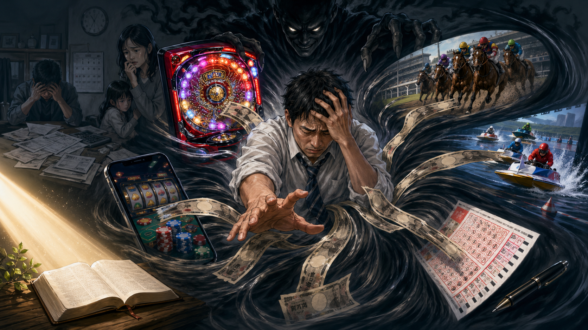

実はギャンブル大国の日本

日本では、「カジノは危険だ」という声がよく聞かれます。確かに、カジノには依存症や借金、家庭崩壊などの大きなリスクがあります。
しかし、よく考えてみると、日本はすでに多くのギャンブル的な仕組みに囲まれている国です。
パチンコ・パチスロ、競馬、競輪、競艇、オートレース、宝くじ、スポーツくじ、そして近年急速に広がっているオンラインカジノ。形は違っていても、多くは人の射幸心を刺激し、「少ない努力で大きく得たい」という欲望をあおります。
日本は「カジノは危険」と言いながら、実際には社会のあちこちにギャンブルの入り口が存在しているのです。
年間26〜27兆円規模という現実
日本でギャンブルやギャンブルに近いものに投じられているお金は、概算で年間26〜27兆円規模とも考えられます。
これは、めまいがするほど大きな金額です。単なる娯楽費というより、社会全体から巨大な川のようにお金が流れ込んでいると言ってもよいでしょう。
そのお金の背後には、一人一人の生活があります。
「少しだけ楽しむつもりだった」
「負けた分を取り返したかった」
「次こそ当たると思った」
「一発逆転したかった」
こうした思いから、さらに深くギャンブルにのめり込んでしまう人は少なくありません。
ギャンブルの本質は「貪欲」を刺激すること
ギャンブルの危険性は、単にお金を失うことだけではありません。もっと深い問題は、人の心の中にある貪欲を刺激することです。
ギャンブルは、次のような考えを育てやすくします。
「楽をして大きく得たい」
「他の人の損失によって自分が得をしたい」
「もっと欲しい」
「失った分を取り返したい」
これは、健全な労働や誠実な生活とはまったく異なる考え方です。努力して得るのではなく、偶然や他人の損失に期待して利益を得ようとするからです。
聖書は、貪欲を軽い問題とは見ていません。コロサイ 3章5節では、貪欲は偶像崇拝に等しいものとして警告されています。
お金や利益への欲望が心を支配するなら、それは神よりもお金を頼る生き方になってしまいます。
聖書は貪欲を禁じている
聖書には、ギャンブルという言葉そのものは直接出てこないかもしれません。しかし、ギャンブルの精神と深く関係する貪欲、不正な利益、金銭への愛については、はっきり警告されています。
エフェソス 5章3節には、貪欲を口にすることさえふさわしくないと述べられています。また、テモテ第一 6章10節では、「お金を愛すること」があらゆる悪い事柄の根であると警告されています。
ギャンブルは、まさにこの「お金を愛する心」をあおります。
もちろん、ギャンブルに関わった人を単純に責めるべきではありません。多くの人は、生活の不安、孤独、ストレス、将来への焦りの中で引き込まれていきます。
しかし、だからこそ、ギャンブルを「ただの娯楽」と考えるのは危険です。人の弱さにつけ込み、欲望を利用する仕組みだからです。
ギャンブルが及ぼす有害な影響
ギャンブルは、本人だけでなく、家族や周囲の人にも大きな被害を及ぼします。
最初は小さな金額でも、負けが続くと「取り返したい」という気持ちが強くなります。勝った場合も、「もっと増やせる」と考えてしまうことがあります。その結果、気づいたときには深刻な借金を抱えていることもあります。
さらに、ギャンブル依存は生活全体を壊していきます。
・仕事に集中できなくなる。
・家族に嘘をつくようになる。
・生活費に手を出す。
・借金を重ねる。
・家庭内の信頼が崩れる。
・絶望感に押しつぶされる。
このように、ギャンブルは単に「お金を失う遊び」ではありません。人の心、家族関係、生活、将来への希望をむしばんでいくものです。
オンラインカジノはさらに危険
近年特に問題になっているのが、オンラインカジノです。
スマートフォン一つで、いつでも、どこでも賭けられます。人に見られず、短時間で何度も賭けられるため、依存に陥りやすい仕組みです。
「海外では合法」などと宣伝されることもありますが、日本国内からオンラインカジノに賭けることは違法です。それにもかかわらず、日本語のサイトや広告、紹介動画、アフィリエイトなどによって、多くの人が誘導されています。
これは非常に悪質です。人の貪欲や不安につけ込み、違法な行為へと誘っているからです。
本当に守るべきもの
ギャンブル産業は、「夢」「娯楽」「一発逆転」という言葉で人を誘います。しかし、その裏側には、多くの損失と苦しみがあります。
私たちが本当に守るべきものは、一時的な興奮や金銭的な利益ではありません。
・清い良心。
・家族との信頼。
・誠実な働き。
・心の平安。
・神との良い関係。
これらは、ギャンブルで得られるかもしれない一時的なお金より、はるかに大切なものです。
まとめ
日本は「カジノは危険」と言いながらも、実際には多くのギャンブル的な仕組みが身近に存在しています。年間26〜27兆円規模ものお金が、射幸心を刺激する仕組みに流れている現実は、決して軽く見ることはできません。
ギャンブルは、単なる娯楽ではありません。人の貪欲を刺激し、お金への愛を育て、生活や家族を壊す危険なものです。
聖書が貪欲を罪として警告しているのは、私たちを縛るためではありません。むしろ、私たちの心と生活を守るためです。
本当の幸福は、偶然の勝ち負けや一発逆転にあるのではありません。神の教えに従い、誠実に生き、清い良心と平安を保つところにあります。